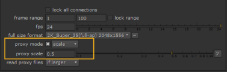

在呈现脚本之前，检查什么是当前活动模式很重要: 全尺寸模式或代理模式。 核武器 以当前活动的比例执行所有渲染。因此，当脚本以代理模式呈现时，处理以代理比例完成，图像输出转到写节点的文件名 代理 字段。如果不指定代理文件名，渲染将失败并显示错误。它从不调整代理图像的大小，也不会将代理图像写入完整大小的代理图像。
要查看和更改当前脚本文件的代理解析，请选择 编辑> 项目设置 从菜单栏，或按 S 将鼠标指针指向节点图或属性 Bin。
|
 |
|
更改下的输出分辨率
项目设置。 |
从 项目 设置 “属性” 面板中，可以从预定义分辨率的下拉菜单中选择新的渲染格式，并切换代理渲染。 您也可以选择 新 下的选项 全尺寸格式 或 代理格式 或使用 代理规模 用于定义合成的自定义渲染分辨率的字段。在代理模式下渲染时，使用右侧的下拉菜单选择是否使用下定义的分辨率 代理格式 或 代理规模 。还检查您是否设置了 读取代理文件 根据您的需要-此设置控制读取节点在代理模式下选择要读取的文件 (完整 res 文件或代理) 的方式。有关这些设置的更多信息，请参阅 设置脚本 .
|
|